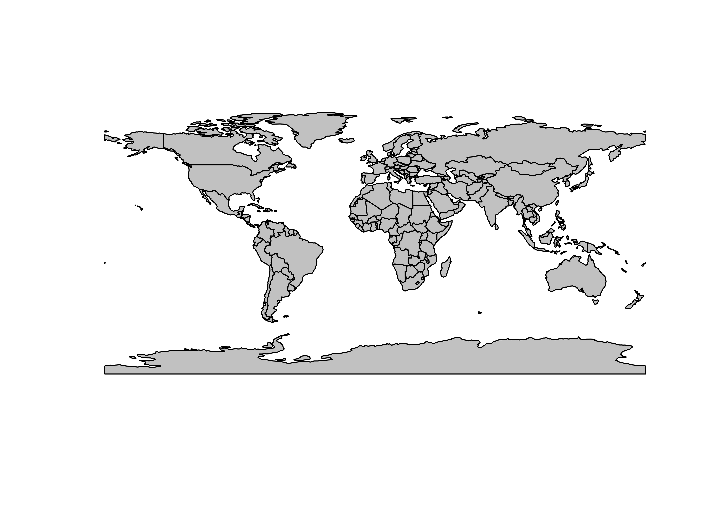
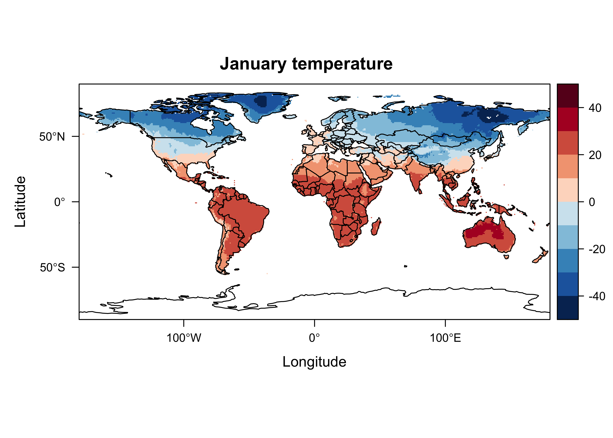

raster and netCDF
1 The raster package
The raster package is large library of functions and
methods for dealing with, as its name implies, raster data sets,
including many geospatial formats, including netCDF. The functions
support many different kinds of geospatial procedures applied to raster
data, like regridding and interpolation, hillslope shading calculations,
logical and mathematical manipulations and so on, but it also can
efficiently read and manipulate large data sets. In particular
raster is designed to only read into memory those parts of
a data set that are necessar for some analysis, raising the possibility
of analyzing data sets that are much larger than the availble machine
memory. In addition, some of the “flatting” and “reshaping” manoevers
that are required to get netCDF data sets into “tidy” formats are
supported by individual functions.
To illustrate the raster appoach to reading and
displaying the CRU temperature data, first load the required
packages:
Also read a world outline shape file for plotting:
# set path and shape file name
shp_path <- "/Users/bartlein/Projects/ESSD/data/shp_files/ne_110m_admin_0_countries/"
shp_name <- "ne_110m_admin_0_countries.shp"
shp_file <- paste(shp_path, shp_name, sep="")
# read the shapefile
world_shp <- read_sf(shp_file)
world_outline <- as(st_geometry(world_shp), Class="Spatial")
# plot the outline
plot(world_outline, col="gray80", lwd=1)
1.1 Read a netCDF file
Next, set the path, filename, and variable name for the CRU long-term mean temperature data
# set path and filename
ncpath <- "/Users/bartlein/Projects/ESSD/data/nc_files/"
ncname <- "cru10min30_tmp"
ncfname <- paste(ncpath, ncname, ".nc", sep="")
dname <- "tmp" # note: tmp means temperature (not temporary)Read the 3-D array from the netCDF file using the
brick() function:
## class : RasterBrick
## dimensions : 360, 720, 259200, 12 (nrow, ncol, ncell, nlayers)
## resolution : 0.5, 0.5 (x, y)
## extent : -180, 180, -90, 90 (xmin, xmax, ymin, ymax)
## crs : +proj=longlat +datum=WGS84 +no_defs
## source : cru10min30_tmp.nc
## names : X1976.01.16, X1976.02.15, X1976.03.16, X1976.04.16, X1976.05.16, X1976.06.16, X1976.07.16, X1976.08.16, X1976.09.16, X1976.10.16, X1976.11.16, X1976.12.16
## Date : 1976-01-16, 1976-02-15, 1976-03-16, 1976-04-16, 1976-05-16, 1976-06-16, 1976-07-16, 1976-08-16, 1976-09-16, 1976-10-16, 1976-11-16, 1976-12-16
## varname : tmp## [1] "RasterBrick"
## attr(,"package")
## [1] "raster"Typing the name of the object tmp_raster produces a
short summary of the contents of the file. Note that the class of the
object just created is raster as opposed to
array.
Next, plot the data, using the rasterVis package version
of the lattice::levelplots() function. The
subset() function in raster extracts a single
layer from the raster brick, the levelplot() function plots
the data, and the layer() function is used to overlay the
world shapefile.
# rasterVis plot
mapTheme <- rasterTheme(region = rev(brewer.pal(10, "RdBu")))
cutpts <- c(-50,-40,-30,-20,-10,0,10,20,30,40,50)
plt <- levelplot(subset(tmp_raster, 1), margin = F, at=cutpts, cuts=11, pretty=TRUE, par.settings = mapTheme,
main="January temperature")
plt + layer(sp.lines(world_outline, col="black", lwd=1.0))
So it looks like the raster package can read a netCDF
file with fewer lines of code than ncdf.
1.2 “Flatting” a raster brick
The getValues() function in raster reshapes
a raster object; if the argument of the function is a raster layer, the
function returns a vector, while if the argument is a raster stack or
raster brick (e.g. a 3-D array), the function returns a matrix, with
each row representing an individual cell (or location in the grid), and
the columns representing layers (which in the case of the CRU data are
times (months)). The replicates the reshaping described earlier for
netCDF files.
## [1] "matrix" "array"## [1] 259200 12The class and diminsions of tmp_array describe the
result of the reshaping.
2 NetCDF and the raster package
The raster package has the capability of reading and
writing netCDF files. There are several issues that could arise in such
transformations (i.e. from the netCDF format to the raster
format) related to such things as the indexing of grid-cell locations:
netCDF coordinates refer to the center of grid cells, while
raster coordinates refer to cell corners.
In practice, the raster package seems to “do the right
thing” in reading and writing netCDF, as can be demonstrated using a
“toy” data set. In the examples below, a simple netCDF data set will be
generated and written out using the ncdf4 package. Then
that netCDF data set will be read in as a raster “layer” and plotted,
and finally the raster layer will be written again as a netCDF file. As
can be seen, the coordiate systems are appropriately adjusted going back
and forth between netCDF and the raster “native”
format.
2.1 Generate and write a simple netCDF file
Generate a small nlon = 8, nlat = 4 2-d
netCDF data set, filled with normally distributed random numbers
library(ncdf4)
# create a small netCDF file, save, and read back in using raster and rasterVis
# generate lons and lats
nlon <- 8; nlat <- 4
dlon <- 360.0/nlon; dlat <- 180.0/nlat
lon <- seq(-180.0+(dlon/2),+180.0-(dlon/2),by=dlon)
lon## [1] -157.5 -112.5 -67.5 -22.5 22.5 67.5 112.5 157.5## [1] -67.5 -22.5 22.5 67.5## [1] 8 4# define dimensions
londim <- ncdim_def("lon", "degrees_east", as.double(lon))
latdim <- ncdim_def("lat", "degrees_north", as.double(lat))
# define variables
varname="tmp"
units="z-scores"
dlname <- "test variable -- original"
fillvalue <- 1e20
tmp.def <- ncvar_def(varname, units, list(londim, latdim), fillvalue,
dlname, prec = "single")As can be seen, the longitudes run from -157.5 to +157.5, while the latitudes run from -67.5 to +67.5, and they define the centers of the netCDF grid cells.
Write the generated data to a netCDF file.
# create a netCDF file
ncfname <- "test-netCDF-file.nc"
ncout <- nc_create(ncfname, list(tmp.def), force_v4 = TRUE)
# put the array
ncvar_put(ncout, tmp.def, tmat)
# put additional attributes into dimension and data variables
ncatt_put(ncout, "lon", "axis", "X")
ncatt_put(ncout, "lat", "axis", "Y")
# add global attributes
title <- "small example netCDF file"
ncatt_put(ncout, 0, "title", title)
# close the file, writing data to disk
nc_close(ncout)Here’s what the netCDF file looks like, as plotted in Panoply:

The ncdump command-line utility can be used to verify
the contents of the file. At the Console in RStudio, the following code
would do that:
## netcdf test-netCDF-file {
## dimensions:
## lon = 8 ;
## lat = 4 ;
## variables:
## double lon(lon) ;
## lon:units = "degrees_east" ;
## lon:long_name = "lon" ;
## lon:axis = "X" ;
## double lat(lat) ;
## lat:units = "degrees_north" ;
## lat:long_name = "lat" ;
## lat:axis = "Y" ;
## float tmp(lat, lon) ;
## tmp:units = "z-scores" ;
## tmp:_FillValue = 1.e+20f ;
## tmp:long_name = "test variable -- original" ;
##
## // global attributes:
## :title = "small example netCDF file" ;
## data:
##
## lon = -157.5, -112.5, -67.5, -22.5, 22.5, 67.5, 112.5, 157.5 ;
##
## lat = -67.5, -22.5, 22.5, 67.5 ;
## }2.2 Read a netCDF file as a raster layer
Now read the netCDF data set back in as a raster object.
(Load the packages if not already loaded.)
## class : RasterLayer
## dimensions : 4, 8, 32 (nrow, ncol, ncell)
## resolution : 45, 45 (x, y)
## extent : -180, 180, -90, 90 (xmin, xmax, ymin, ymax)
## crs : +proj=longlat +datum=WGS84 +no_defs
## source : test-netCDF-file.nc
## names : test.variable....original
## zvar : tmpListing the object as above, provides its internal
raster attributes, while the print() function
provides the characteristics of the source netCDF file.
## File /Users/bartlein/Dropbox/DataVis/working/REarthSysSci/test-netCDF-file.nc (NC_FORMAT_NETCDF4):
##
## 1 variables (excluding dimension variables):
## float tmp[lon,lat] (Contiguous storage)
## units: z-scores
## _FillValue: 1.00000002004088e+20
## long_name: test variable -- original
##
## 2 dimensions:
## lon Size:8
## units: degrees_east
## long_name: lon
## axis: X
## lat Size:4
## units: degrees_north
## long_name: lat
## axis: Y
##
## 1 global attributes:
## title: small example netCDF file2.3 Get the actual coordinates from the raster
The actual coordinate values of the cell centers can be gotten as follows
## [1] -157.5 -112.5 -67.5 -22.5 22.5 67.5 112.5 157.5## [1] 67.5 22.5 -22.5 -67.5These can be compared with the original `lon’ and ‘lat’ values defined above:
## [1] -157.5 -112.5 -67.5 -22.5 22.5 67.5 112.5 157.5## [1] 67.5 22.5 -22.5 -67.5(Note that the latitudes in the netCDF file were defined to run from
negative to positive values, while the raster yFromRow()
function reports them in descending order. The negative sign in front of
lon reverses the order for comparability.)
The data can be mapped using the rasterVis version of
the levelplot() function, with continental outlines
overlain.
# map the data
mapTheme <- rasterTheme(region = rev(brewer.pal(10, "RdBu")))
cutpts <- c(-2.5, -2.0, -1.5, -1, -0.5, 0, 0.5, 1.0, 1.5, 2.0, 2.5)
plt <- levelplot(tmpin, margin = F, at=cutpts, cuts=11, pretty=TRUE, par.settings = mapTheme,
main="test variable -- as raster layer")
plt + layer(sp.lines(world_outline, col="black", lwd=1.0))getValues(tmpin)

Looks ok.
2.4 Write the raster layer as a netCDF file
Finally, write the raster layer (tmpin) out as a netCDF
file:
# write the raster layer (tmpin)
outfile <- "test_raster.nc"
crs(tmpin) <- "+proj=longlat +datum=WGS84 +no_defs +ellps=WGS84 +towgs84=0,0,0"
writeRaster(tmpin, outfile, overwrite=TRUE, format="CDF", varname="tmp", varunit="z-scores",
longname="test variable -- raster layer to netCDF", xname="lon", yname="lat")Here’s what the resulting netCDF file looks like in Panoply: